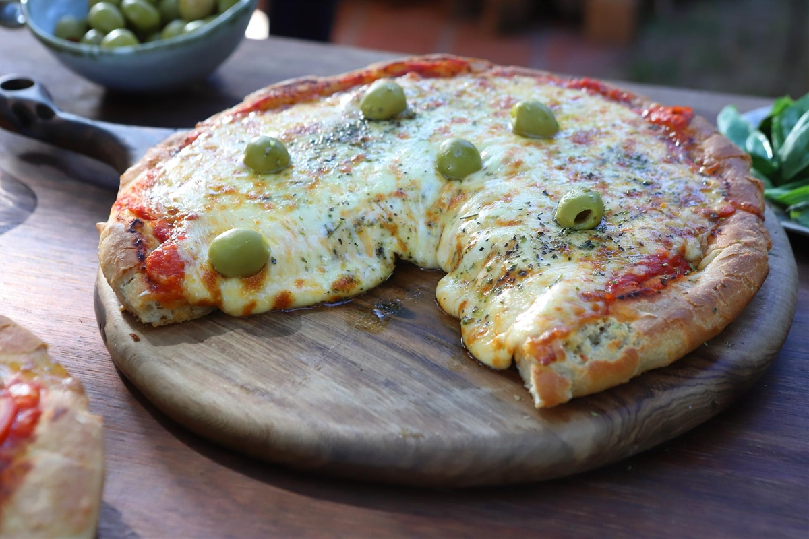

Receta de Pizza

Brick-Oven Pizza
This simple brick-oven pizza recipe has been made famous by several well-known, Brooklyn wood-fire pizzerias. Best accompanied by ice-cold, pilsner-style lager beer.
Ingredients
Dough:
- 1/4 de vaso de agua tibia
- 1 cucharadita de levadura seca
- 1 vaso de agua fría
- 1 cucharadita de sal
- 3 tazas de harina 000
- 1 cucharada de aceite de oliva virgen-extra
Toppings:
- 200 gramos de mozzarella
- 1 cucharadita de oregano
- pimienta negra a gusto
- 1 lata de tomates triturados
- 2 cucharadas de aceite de oliva virgen-extra
- 6 hojas de albahaca fresca
Preparación:
-
Prepare la masa: Vierta agua tibia en un recipiente grande y luego espolvoree la levadura por encima. Deje reposar durante 5 minutos. Agregue el agua fría y la sal. Agregue la harina, 1 taza a la vez, hasta que se integre.
-
Amasar la masa sobre una superficie enharinada hasta que quede suave, aproximadamente 10 minutos.
- D
ividir por la mitad y formar dos bolas de masa compactas. Cubrir con aceite de oliva y refrigerar en un recipiente cerrado durante al menos 16 horas. Asegúrese de utilizar un recipiente lo suficientemente grande para permitir que la masa suba.
- Prepara las pizzas: retira la masa del refrigerador una hora antes de usarla.
-
Precaliente el horno a 550 grados F (288 grados C) con una piedra para pizza en la rejilla más baja. Espolvoree ligeramente una pala para pizza con harina.
-
Prepara la primera pizza: espolvorea ligeramente una bola de masa con harina y estírala gradualmente hasta que tenga aproximadamente 35 cm de diámetro, o aproximadamente el tamaño de la piedra para pizza. Colócala sobre la pala enharinada.
-
Coloque la mitad de la mozzarella sobre la masa, luego espolvoree 1/4 de cucharadita de orégano y 1/8 de cucharadita de pimienta por encima. Coloque al azar 1/4 de taza de tomates triturados sobre la pizza, dejando algunas áreas vacías, luego rocíe 1 cucharada de aceite de oliva por encima.
-
Con un movimiento rápido de un lado a otro, asegúrese de que la masa se desprenda fácilmente de la pala. Coloque la punta de la pala en la parte posterior de la piedra para pizza precalentada y retire la pala de modo que la pizza quede sobre la piedra.
-
Hornee en el horno precalentado hasta que la corteza comience a dorarse, de 4 a 6 minutos.
-
Desliza la pizza sobre la pala y sácala del horno; luego, deslízala sobre una superficie de trabajo. Espolvorea la mitad de las hojas de albahaca al azar sobre la pizza. Córtala en gajos y sirve.
-
Siga los pasos 5 al 9 para hacer la segunda pizza.